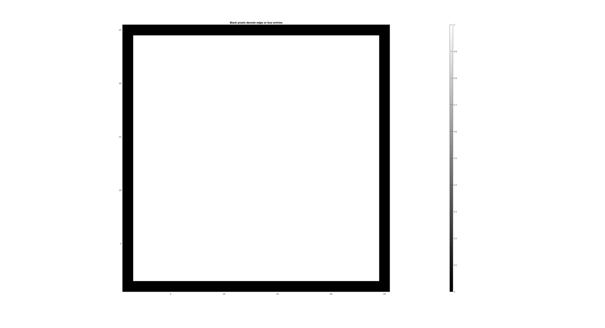
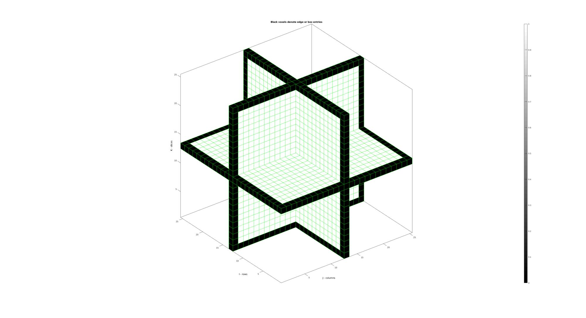

box_indices
Below is a demonstration of the features of the box_indices function
Contents
Syntax
[IND]=box_indices(siz);
Description
The box_indices function returns the indices of the outer boundary elements of an array (which can be thought of as defining a box), i.e. the indices of the first and last row, columsn, slice, etc..
Examples
clear; close all; clc;
Plot settings
fig_color='w'; fig_colordef='white'; faceAlpha1=1; faceAlpha2=0.65; edgeColor1='none'; edgeColor2='none';
Example: box_indices for 2D arrays
siz=[25 25];
M=ones(siz);
[indBox]=box_indices(size(M));
M(indBox)=0; %setting edge indices to 0 for visualization
Plotting results
figuremax(fig_color,fig_colordef); title('Black pixels denote edge or box entries'); hold on; imagesc(M); axis equal; axis tight; axis vis3d; grid off; colormap gray; caxis([0 1]); colorbar; drawnow;
Example: box_indices for 3D arrays
siz=[25 25 25];
M=ones(siz);
[indBox]=box_indices(size(M));
M(indBox)=0; %setting edge indices to 0 for visualization
Plotting results. Visualization shows 3 mutally orthogonal slices but black voxels are actually all around the 3D matrix.
% Creating patch data for voxel display logicPlot=false(size(M)); logicPlot(:,:,round(size(M,3)/2))=1; logicPlot(:,round(size(M,2)/2),:)=1; logicPlot(round(size(M,1)/2),:,:)=1; [F,V,C]=ind2patch(logicPlot,M,'v'); % [F2,V2,C2]=ind2patch(M==0,M,'vb'); figuremax(fig_color,fig_colordef); title('Black voxels denote edge or box entries'); hold on; xlabel('J - columns');ylabel('I - rows'); zlabel('K - slices'); hold on; patch('Faces',F,'Vertices',V,'FaceColor','flat','CData',C,'EdgeColor','g','FaceAlpha',1); % patch('Faces',F2,'Vertices',V2,'FaceColor','flat','CData',C2,'EdgeColor','k','FaceAlpha',0.1); axis equal; view(3); axis tight; axis vis3d; grid off; box on; colormap gray; caxis([0 1]); colorbar; drawnow;

GIBBON www.gibboncode.org
Kevin Mattheus Moerman, gibbon.toolbox@gmail.com
GIBBON footer text
License: https://github.com/gibbonCode/GIBBON/blob/master/LICENSE
GIBBON: The Geometry and Image-based Bioengineering add-On. A toolbox for image segmentation, image-based modeling, meshing, and finite element analysis.
Copyright (C) 2019 Kevin Mattheus Moerman
This program is free software: you can redistribute it and/or modify it under the terms of the GNU General Public License as published by the Free Software Foundation, either version 3 of the License, or (at your option) any later version.
This program is distributed in the hope that it will be useful, but WITHOUT ANY WARRANTY; without even the implied warranty of MERCHANTABILITY or FITNESS FOR A PARTICULAR PURPOSE. See the GNU General Public License for more details.
You should have received a copy of the GNU General Public License along with this program. If not, see http://www.gnu.org/licenses/.